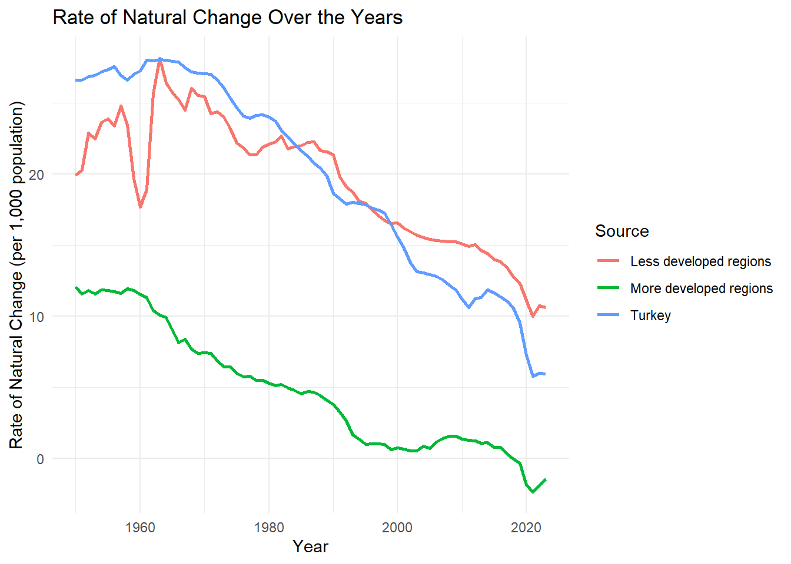

This analysis seeks to explore and compare Turkey’s demographic indicators with those of more developed and less developed regions, based on data provided by the UN Demographic Indicators Dataset. By examining critical parameters such as total deaths, crude death rates, and fertility trends, we aim to gain valuable insights into Turkey’s demographic status in relation to other regions with varying levels of development.
We will examine these indicators over time to assess whether Turkey’s demographic patterns are more aligned with developed countries, which generally experience better healthcare outcomes, or with less developed countries, where healthcare access may be limited, resulting in different mortality and fertility trends.
Births by Women Aged 15-19: Turkey vs. More Developed vs. Less Developed Countries
This graph compares the birth rate among women aged 15-19 in Turkey, More Developed countries, and Less Developed countries.
This code block visualizes the graph:
# Load required librarieslibrary(readxl) # For reading Excel files
Warning: package 'readxl' was built under R version 4.4.2
library(tidyverse) # For data manipulation
Warning: package 'tidyverse' was built under R version 4.4.2
Warning: package 'tidyr' was built under R version 4.4.2
Warning: package 'readr' was built under R version 4.4.2
Warning: package 'purrr' was built under R version 4.4.2
Warning: package 'dplyr' was built under R version 4.4.2
Warning: package 'stringr' was built under R version 4.4.2
Warning: package 'forcats' was built under R version 4.4.2
Warning: package 'lubridate' was built under R version 4.4.2
── Attaching core tidyverse packages ──────────────────────── tidyverse 2.0.0 ──
✔ dplyr 1.1.4 ✔ readr 2.1.5
✔ forcats 1.0.0 ✔ stringr 1.5.1
✔ ggplot2 3.5.1 ✔ tibble 3.2.1
✔ lubridate 1.9.4 ✔ tidyr 1.3.1
✔ purrr 1.0.2
── Conflicts ────────────────────────────────────────── tidyverse_conflicts() ──
✖ dplyr::filter() masks stats::filter()
✖ dplyr::lag() masks stats::lag()
ℹ Use the conflicted package (<http://conflicted.r-lib.org/>) to force all conflicts to become errors
library(ggplot2) # For plotting# Load the data from the Excel fileother_parameters <-read_excel("data/other_parameters.xlsx")# Filter the data for Turkey, More Developed, and Less Developed regionsturkey_data_other <- other_parameters %>%filter(`Region, subregion, country or area *`=="Turkey")more_developed_data_other <- other_parameters %>%filter(`Region, subregion, country or area *`=="More developed regions")less_developed_data_other <- other_parameters %>%filter(`Region, subregion, country or area *`=="Less developed regions")# Adding a "Source" column to each dataset for identificationturkey_data_other$Source <-"Turkey"more_developed_data_other$Source <-"More developed"less_developed_data_other$Source <-"Less developed"# Combine the datasets into onecombined_data <-rbind(turkey_data_other, more_developed_data_other, less_developed_data_other)# Plotting the graph for Teenage Birth Percentageggplot(combined_data, aes(x = Year, y =`Teenage Birth Percentage`, color = Source)) +geom_line(linewidth =1) +# Add lineslabs(title ="Teenage Birth Percentage Over Years",x ="Year",y ="Teenage Birth Percentage" ) +theme_minimal() # Clean theme
Teen Birth Rates and Socioeconomic Factors: Teen births are often influenced by socioeconomic, educational, and healthcare factors. Less developed countries typically have higher rates of teen births due to lower access to education and family planning services. By comparing Turkey to both developed and less developed countries, we can analyze where Turkey stands in terms of policies surrounding family planning, education, and access to healthcare.
Unfortunately, in the 1950s, Turkey was behind even the less developed countries in terms of childbirth. However, since the 1990s, it has first caught up with them and nowadays it has reached the level of more developed countries.
Analysis of Life Expectancy at Birth Over the Years
The following graph illustrates the life expectancy at birth over the years for Turkey, More Developed, and Less Developed countries:
This code block visualizes the graph:
# Load required librarieslibrary(readxl) # For reading Excel fileslibrary(tidyverse) # For data manipulationlibrary(ggplot2) # For plotting# Load the data from the Excel filelife_expectancy <-read_excel("data/life_expectancy.xlsx")# Filter the data for Turkey, More Developed, and Less Developed regionsturkey_expectancy <- life_expectancy %>%filter(`Region, subregion, country or area *`=="Turkey")more_developed_expectancy <- life_expectancy %>%filter(`Region, subregion, country or area *`=="More developed regions")less_developed_expectancy <- life_expectancy %>%filter(`Region, subregion, country or area *`=="Less developed regions")# Adding a "Source" column to each dataset for identificationturkey_expectancy$Source <-"Turkey"more_developed_expectancy$Source <-"More developed regions"less_developed_expectancy$Source <-"Less developed regions"# Combine the datasets into onecombined_data <-rbind(turkey_expectancy, more_developed_expectancy, less_developed_expectancy)# Plotting the graph for Life Expectancy at Birth (both sexes) Over Yearsggplot(combined_data, aes(x = Year, y =`Life Expectancy at Birth, both sexes (years)`, color = Source)) +geom_line(linewidth =1) +# Add lines for each grouplabs(title ="Life Expectancy at Birth, Both Sexes (Years) Over Years",x ="Year",y ="Life Expectancy at Birth, Both Sexes (Years)" ) +theme_minimal() # Clean and minimal theme for the plot
The plot shows the trends in life expectancy at birth for three distinct groups: Turkey, More Developed countries, and Less Developed countries.
The X-axis represents the years, while the Y-axis shows life expectancy at birth in years.
Each group (Turkey, More Developed, Less Developed) is represented with different colored lines, allowing for easy comparison.
By examining the graph:
Just like its geographical location, Turkey serves as a bridge between developed and undeveloped countries in terms of life expectancy as well. However, nowadays, Turkey is extremely close to developed countries. Also, the drops likely caused by COVID-19 in 2020 should not be overlooked.
This analysis indicates that Turkey is steadily closing the gap with more developed regions, showcasing positive demographic developments in terms of life expectancy.
Analysis of Median Age Over the Years
# Load required librarieslibrary(readxl) # For reading Excel fileslibrary(tidyverse) # For data manipulationlibrary(ggplot2) # For plotting# Load the data from the Excel filechange_in_population <-read_excel("data/change_in_population.xlsx")# Filter the data for Turkey, More Developed, and Less Developed regionsturkey_median_age <- change_in_population %>%filter(`Region, subregion, country or area *`=="Turkey")more_developed_median_age <- change_in_population %>%filter(`Region, subregion, country or area *`=="More developed regions")less_developed_median_age <- change_in_population %>%filter(`Region, subregion, country or area *`=="Less developed regions")# Adding a "Source" column to each dataset for identificationturkey_median_age$Source <-"Turkey"more_developed_median_age$Source <-"More developed regions"less_developed_median_age$Source <-"Less developed regions"# Combine the datasets into onecombined_data <-rbind(turkey_median_age, more_developed_median_age, less_developed_median_age)# Plotting the graph for Life Expectancy at Birth (both sexes) Over Yearsggplot(combined_data, aes(x = Year, y =`Median Age, as of 1 July (years)`, color = Source)) +geom_line(linewidth =1) +# Add lines for each grouplabs(title ="Median Age (years)",x ="Year",y ="Median Age (years)" ) +theme_minimal() # Clean and minimal theme for the plot
In the 1950s, Turkey had a very young population, even younger than less developed countries. However, even though it later came to have an older population than those countries, it still has a younger population compared to developed countries.
Analysis of Rate Of Natural Change Over the Years
# Load required librarieslibrary(readxl) # For reading Excel fileslibrary(tidyverse) # For data manipulationlibrary(ggplot2) # For plotting# Load the data from the Excel filechange_in_population <-read_excel("data/change_in_population.xlsx")# Filter the data for Turkey, More Developed, and Less Developed regionsturkey_rate_of_natural_change <- change_in_population %>%filter(`Region, subregion, country or area *`=="Turkey")more_developed_rate_of_natural_change <- change_in_population %>%filter(`Region, subregion, country or area *`=="More developed regions")less_developed_rate_of_natural_change <- change_in_population %>%filter(`Region, subregion, country or area *`=="Less developed regions")# Adding a "Source" column to each dataset for identificationturkey_rate_of_natural_change$Source <-"Turkey"more_developed_rate_of_natural_change$Source <-"More developed regions"less_developed_rate_of_natural_change$Source <-"Less developed regions"# Combine the datasets into onecombined_data <-rbind(turkey_rate_of_natural_change, more_developed_rate_of_natural_change, less_developed_rate_of_natural_change)# Plotting the graph for Life Expectancy at Birth (both sexes) Over Yearsggplot(combined_data, aes(x = Year, y =`Rate of Natural Change (per 1,000 population)`, color = Source)) +geom_line(linewidth =1) +# Add lines for each grouplabs(title ="Rate of Natural Change Over the Years",x ="Year",y ="Rate of Natural Change (per 1,000 population)" ) +theme_minimal() # Clean and minimal theme for the plot

While Turkey had the highest population ratio among the groups we compared, its population growth rate has slowed down since the 2000s to be somewhat lower than less developed countries. However, the increase in population ratio in 2020 is noteworthy.
Analysis of Infant Mortality Rate Over the Years
# Load required librarieslibrary(readxl) # For reading Excel fileslibrary(tidyverse) # For data manipulationlibrary(ggplot2) # For plotting# Load the data from the Excel filechild <-read_excel("data/child.xlsx")# Filter the data for Turkey, More Developed, and Less Developed regionsturkey_rate_of_infant_mortality <- child %>%filter(`Region, subregion, country or area *`=="Turkey")more_developed_rate_of_infant_mortality <- child %>%filter(`Region, subregion, country or area *`=="More developed regions")less_developed_rate_of_infant_mortality <- child %>%filter(`Region, subregion, country or area *`=="Less developed regions")# Adding a "Source" column to each dataset for identificationturkey_rate_of_infant_mortality$Source <-"Turkey"more_developed_rate_of_infant_mortality$Source <-"More developed regions"less_developed_rate_of_infant_mortality$Source <-"Less developed regions"# Combine the datasets into onecombined_data <-rbind(turkey_rate_of_infant_mortality, more_developed_rate_of_infant_mortality, less_developed_rate_of_infant_mortality)# Plotting the graph for Life Expectancy at Birth (both sexes) Over Yearsggplot(combined_data, aes(x = Year, y =`Infant Mortality Rate (infant deaths per 1,000 live births)`, color = Source)) +geom_line(linewidth =1) +# Add lines for each grouplabs(title ="Infant Mortality Rate Over the Years",x ="Year",y ="Infant Mortality Rate (infant deaths per 1,000 live births)" ) +theme_minimal() # Clean and minimal theme for the plot
Although Turkey started from a rather poor point in terms of child mortality rate, with a steady improvement rate, it has now reached the level of developed countries.